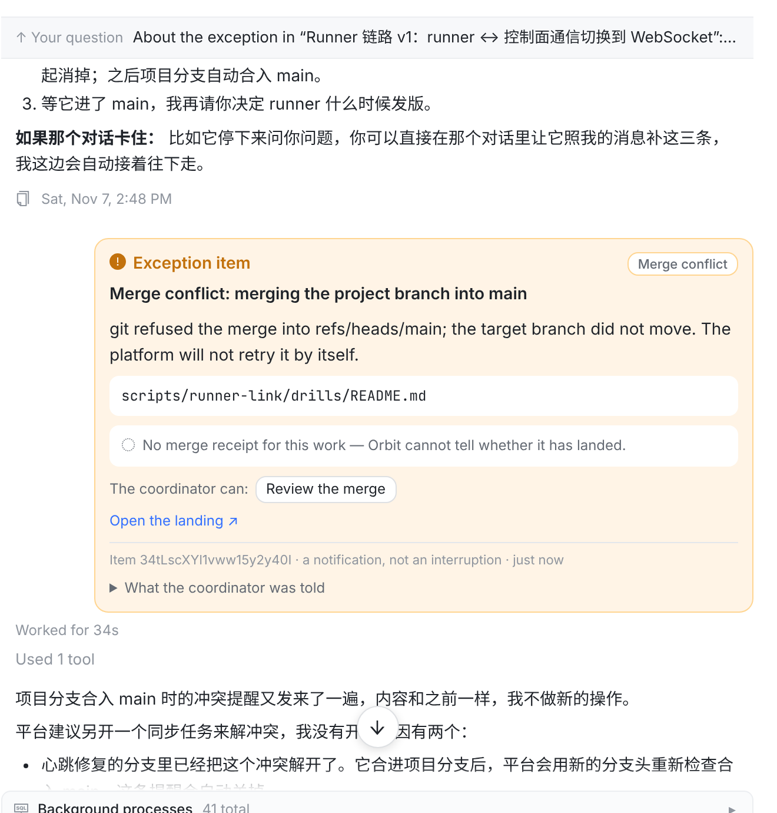
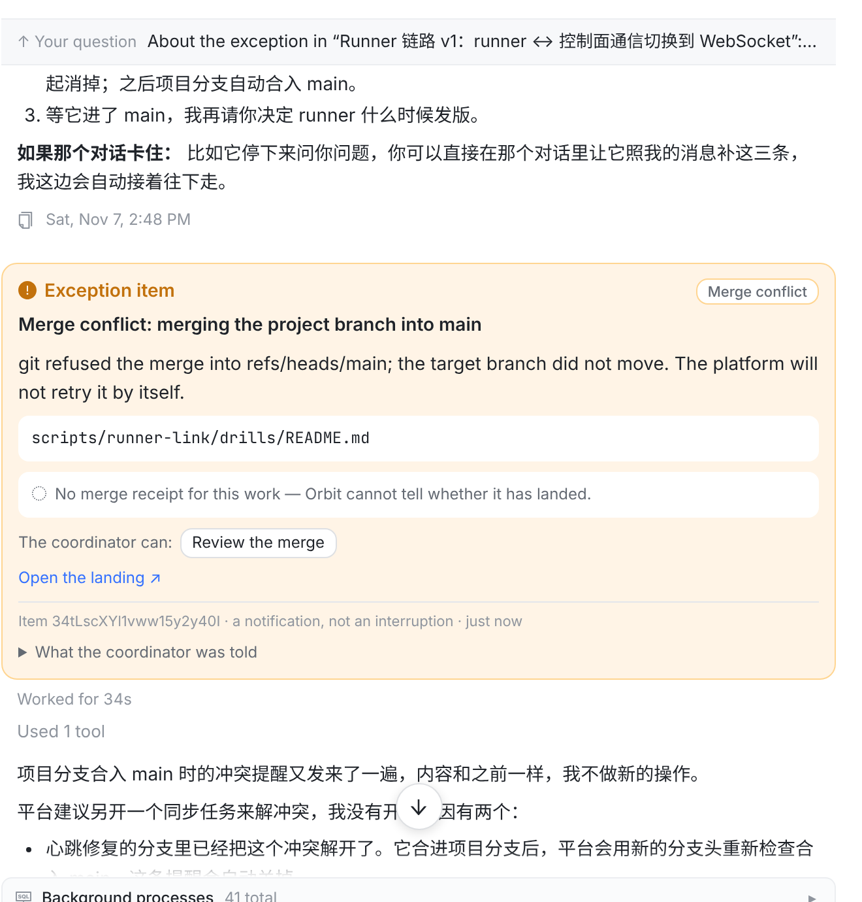
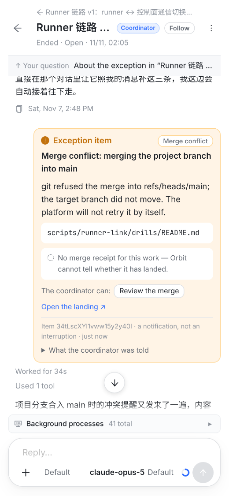
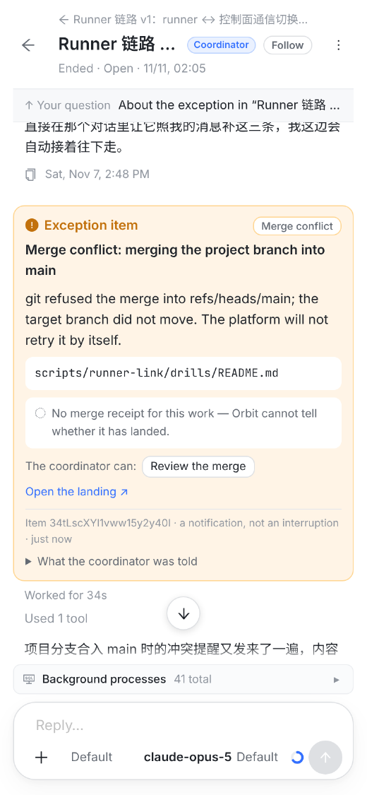
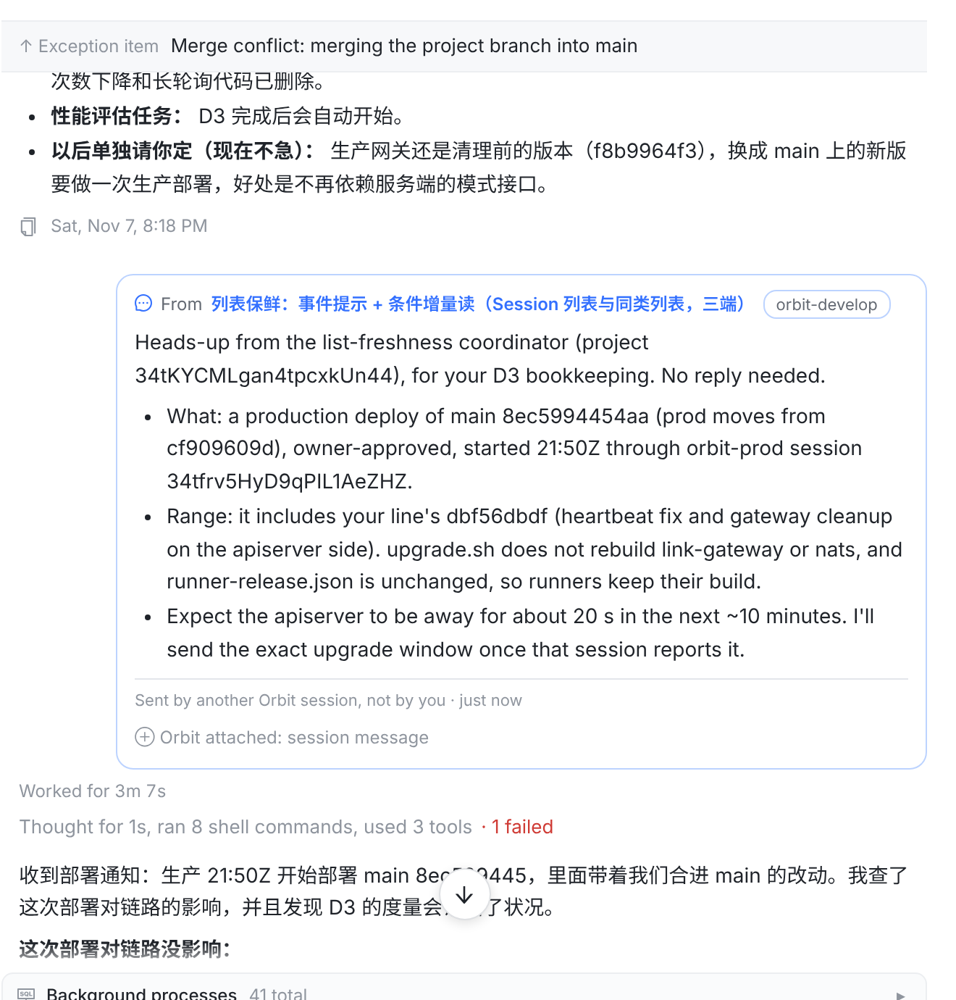
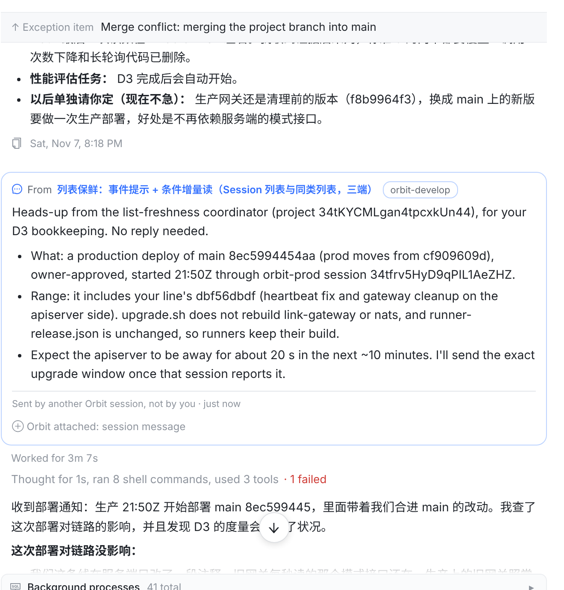
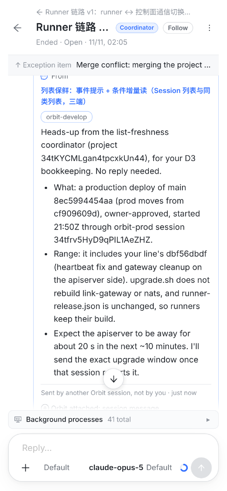
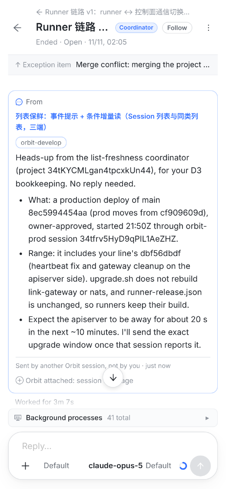

justify-content: flex-end，宽 88%），和你自己的消息同侧；但 Orbit 的其他消息（协调者通知、watch、后台作业）已经是居中或靠左的一行。方案 2：这几种卡片也改到左侧，和 agent 的回复同一栏、占满宽度。卡片和上面的回复、下面的回复不在一栏，看起来像你发出去的消息。

左边缘和回复对齐，从上往下读是一条线：Orbit 说了什么 → 协调者怎么处理。卡片本身不变，仍是橙色的例外项。

左：现在 右：方案


同样靠右、88% 宽。

卡片顶上已经写着 “From <发信会话>” 和 “Sent by another Orbit session, not by you”，放到左边不会被误认成 agent 自己说的。

左：现在 右：方案。手机上多出来的 12% 宽度让长消息少折几行。


| 卡片 | 方案 |
|---|---|
例外项（.oic） | 靠左，占满一栏 |
任务开工（.tsc，任务会话的第一轮） | 靠左，占满一栏 |
项目已启动（.psc） | 靠左，占满一栏 |
确认审查请求 / 审查退回（.crc） | 靠左，占满一栏 |
其他会话发来的消息（.smc） | 靠左，占满一栏（见待你定 1） |
| 你自己发的消息 | 不动，仍靠右 |
会话回信（.src）、协调者通知、watch / 后台作业、折叠行 | 不动，本来就在左侧或居中 |
index.css 五处 *-wrap 的 justify-content 和卡片宽度。